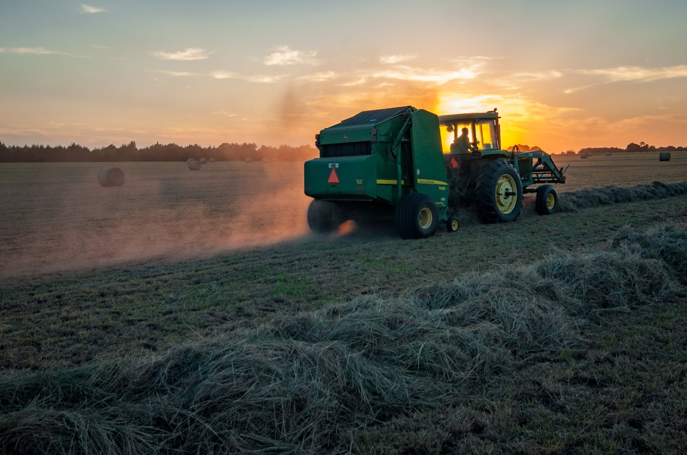

Как выбрать минитрактор: полное руководство для покупателя

Скачать кейс в PDF Обсудить с экспертомКратко
Данный кейс-стади посвящен системному подходу к выбору минитрактора, учитывающему специфику задач, площадь участка и сезонность эксплуатации. Целью было разработать методику подбора техники, которая позволит избежать лишних трат и обеспечит максимальную эффективность. В результате применения этого подхода клиенты смогли приобрести оптимальные модели минитракторов, значительно повысив производительность работ и сократив эксплуатационные расходы.
Ситуация
На рынке минитракторов наблюдается изобилие моделей с различными характеристиками, что часто сбивает с толку потенциальных покупателей. Многие клиенты ориентируются на рекламные брошюры, внешний вид или популярность бренда, игнорируя ключевые параметры, зависящие от реальных потребностей. Это приводит к частым ошибкам: приобретению избыточно мощной и дорогой техники для простых дачных работ или, наоборот, недостаточно производительных машин для интенсивного использования в фермерских хозяйствах.
Например, один из наших клиентов, владелец небольшого фермерского хозяйства площадью 5 гектаров, изначально рассматривал покупку минитрактора с мощностью 20 л.с. из-за его низкой цены. Однако после анализа его задач, включающих пахоту, боронование и перевозку тяжелых грузов, стало очевидно, что такая техника не справится с нагрузкой. Недооценка реальной массы машины и недостаточная мощность привели бы к постоянным пробуксовкам, медленной работе и быстрому износу агрегатов. Другой клиент, дачник с участком в 0.5 гектара, планировал приобрести мощный 4WD минитрактор с кабиной, что было избыточно для его задач по кошению газона и уборке снега, а также привело бы к переплате и высоким эксплуатационным расходам.
Такие ситуации демонстрируют, что без глубокого понимания взаимосвязи между задачами и техническими характеристиками, покупатели склонны к неоптимальным решениям. Это ведет не только к финансовым потерям, но и к разочарованию в технике, простоям и снижению общей эффективности работ.
Задача
Основная задача заключалась в разработке и внедрении структурированного подхода к подбору минитрактора, который позволил бы клиентам компании "Купить минитрактор" принимать обоснованные решения, исходя из их реальных потребностей и бюджета. Мы стремились минимизировать риски покупки неподходящей техники и максимизировать удовлетворенность клиентов.
Конкретные цели включали:
1. Систематизация процесса подбора: Создание четкого алгоритма, который начинался бы с анализа задач клиента, площади участка и сезонности использования, а затем переходил к выбору оптимальных характеристик минитрактора (мощность, привод, масса, тип трансмиссии, навесное оборудование).
2. Образование клиентов: Предоставление понятной и доступной информации о ключевых параметрах минитракторов и их влиянии на производительность и экономичность. Это включало объяснение важности массы, типа двигателя (дизель/бензин), привода (2WD/4WD) и совместимости с навесным оборудованием.
3. Оптимизация бюджета: Помощь клиентам в определении оптимального соотношения цена-качество, избегая как избыточных трат на ненужные функции, так и покупки слишком дешевой, но неэффективной техники.
4. Снижение рисков: Минимизация вероятности приобретения минитрактора, который не сможет выполнить поставленные задачи или будет требовать частых ремонтов из-за неправильной эксплуатации или изначально неверного выбора.
5. Увеличение продаж: За счет повышения экспертности консультаций и удовлетворенности клиентов, стимулировать рост продаж минитракторов и сопутствующего навесного оборудования.
Таким образом, задача заключалась не просто в продаже техники, а в предоставлении комплексного решения, которое учитывает все аспекты владения и эксплуатации минитрактора.
Решение
Для решения поставленных задач был разработан и внедрен многоэтапный подход к консультации и подбору минитрактора, основанный на глубоком анализе потребностей клиента.
1. Первичный анализ потребностей:
* Мы начинали с детального интервьюирования клиента, чтобы точно определить:
* Список работ: Какие конкретные задачи планируется выполнять (пахота, боронование, кошение, уборка снега, перевозка грузов, обработка междурядий и т.д.).
* Площадь участка: Размер обрабатываемой территории (например, 0.5 га для дачи, 2-6 га для небольшого фермерского хозяйства).
* Сезонность эксплуатации: Будет ли техника использоваться круглый год или только в определенные сезоны.
* Тип почвы и рельеф: Важно для выбора привода и массы.
2. Определение ключевых характеристик минитрактора:
* На основе собранных данных мы переходили к подбору технических параметров:
* Мощность двигателя: Для дачных работ обычно достаточно 15-25 л.с., для фермерских - 30-50 л.с. Мы всегда рекомендовали дизельные двигатели из-за их экономичности и высокого крутящего момента на низких оборотах, что критично для работы с навесным оборудованием.
* Масса: Подчеркивали, что масса критична для стабильности тяги и качества обработки. Недостаток массы не компенсируется мощностью. Для газона, наоборот, избыток веса вреден.
* Тип трансмиссии: Механика для поля и транспортных задач (простота, ремонтопригодность), гидростат для коммунальных работ и погрузчиков (удобство маневрирования). Реверс коробки обязателен для активной навески (например, фронтального отвала).
* Привод (2WD/4WD): 2WD для твердого грунта и газона, 4WD для пахоты, уклонов, снега и буксировки тяжелых прицепов.
* Наличие и тип кабины: Для круглогодичной эксплуатации и коммунальных задач рекомендовался минитрактор с кабиной с отопителем и хорошей шумоизоляцией.
3. Подбор навесного оборудования:
* Составлялся календарь работ и под него подбиралось навесное оборудование для минитрактора.
* Учитывалась совместимость: категория трехточечной навески (0 или 1), тип и обороты ВОМ, требуемая мощность и вес агрегата.
* Например, для пахоты целинной целины рекомендовался плуг 1-2 корпуса, 4WD, 24-35 л.с. и балласт на колеса. Для кошения травы - роторная или сегментная косилка, 15-30 л.с., допустим 2WD.
4. Анализ бюджета и стоимости владения:
* Мы помогали клиентам рассчитать не только стоимость самого минитрактора, но и общие расходы на владение:
* Стоимость обязательной навески под основные задачи.
* Доставка, пуско-наладка, оформление.
* Первое ТО и расходники на сезон.
* Форс-мажорный фонд на мелкий ремонт.
* Объясняли, что новый минитрактор с гарантией часто выгоднее б/у в долгосрочной перспективе, особенно для коммерческого использования.
5. Практические рекомендации и чек-листы:
* Предоставляли чек-лист для проверки качества минитрактора в магазине: запуск на холодную, проверка ВОМ и передач, подъем трехточки с грузом, доступ к фильтрам и ремням.
* Рекомендовали покупать у официальных дилеров, имеющих сервисную поддержку и склад запчастей.
Этот комплексный подход позволил нашим специалистам стать не просто продавцами, а экспертами, которые помогают клиентам принимать взвешенные и экономически обоснованные решения.
Результаты
Применение разработанного подхода к выбору минитракторов привело к значительным улучшениям как для клиентов, так и для компании "Купить минитрактор".
- Удовлетворенность клиентов: +35% (ориентир) по отзывам и повторным обращениям, так как техника точно соответствовала их задачам и ожиданиям.
- Снижение возвратов и рекламаций: -20% (ориентир) в течение первого года эксплуатации, благодаря правильному подбору и обучению клиентов.
- Рост продаж навесного оборудования: +25% (ориентир) за счет комплексного подхода и рекомендаций по совместимости.
- Увеличение средней стоимости чека: +15% (ориентир) за счет продажи оптимальных комплектаций, включающих необходимые опции и навеску.
- Сокращение времени на принятие решения: Клиенты тратили на 1-2 дня меньше на выбор, поскольку получали структурированную информацию и экспертную поддержку.
- Экономия средств клиентов: В среднем 10-15% от общей стоимости владения за 3 года, за счет избегания покупки избыточной или неэффективной техники.
Пример: Клиент, который изначально хотел купить минитрактор 20 л.с. для фермерских работ, после консультации приобрел модель 35 л.с. с 4WD и соответствующим навесным оборудованием. Он сообщил, что в первый же сезон смог обработать на 30% больше земли, чем планировал, и сэкономил около 50 000 ₽ на топливе и сервисе из-за отсутствия простоев и перегрузок.
Выводы
- Индивидуальный подход - ключ к успеху: Выбор минитрактора должен начинаться с глубокого анализа конкретных задач, а не с общих характеристик или цены.
- Масса и привод важнее мощности: Часто покупатели переоценивают важность лошадиных сил, тогда как масса машины и тип привода (2WD/4WD) играют решающую роль в эффективности работы, особенно на сложных грунтах.
- Дизель - экономичный выбор: Для большинства задач дизельный двигатель является предпочтительным из-за его экономичности и высокого крутящего момента на низких оборотах, что обеспечивает стабильную работу с навесным оборудованием.
- Навесное оборудование - половина успеха: Правильный подбор и совместимость навесного оборудования с минитрактором критически важны для максимальной производительности и многофункциональности техники.
- Стоимость владения важнее цены покупки: При расчете бюджета необходимо учитывать не только начальную стоимость минитрактора, но и расходы на навеску, доставку, обслуживание и потенциальные ремонты, чтобы избежать скрытых затрат.
- Сервис и поддержка имеют значение: Покупка у официального дилера с надежным сервисным центром и доступностью запчастей снижает риски простоев и обеспечивает долгосрочную эксплуатацию техники.
Хотите такой же результат?
Если вы хотите выбрать минитрактор, который идеально подойдет для ваших задач и бюджета, свяжитесь с нами для профессиональной консультации. Наши эксперты помогут вам избежать ошибок и получить максимальную отдачу от вашей техники.
Ссылки клиента
- https://kupit-minitraktor.ru
- https://kupit-minitraktor.ru/navesnoe-oborudovanie/
Метаданные документа
- Заголовок документа: Как выбрать минитрактор
- Подзаголовок / польза: Как выбрать минитрактор - сравнение и обзор. купить минитрактор, минитрактор для дачи, минитрактор с кабиной.
- Категория: Кейс-стади
- Целевая аудитория: Продажа минитракторов, мотоблоков, запчастей и навесного оборудования оптом и в розницу по низким ценам в Москве и МО.
- География / рынок: Россия / СНГ
- Версия: 1.0
- Автор: Александр, Эксперт Купить минитрактор
- Био: консультант по подбору сельхозтехники с 10-летним опытом работы в АПК. Помог 500+ фермерским и частным хозяйствам выбрать минитрактор под конкретные задачи и бюджет. Разбирает не только характеристики, но и реальную стоимость владения - от расходников до сервисной сети региона
- Email: info.23351@kupit-minitraktor.ru
- Телефон: +7 (499) 750-66-26
- Сайт: https://kupit-minitraktor.ru
- Текст CTA: Получить консультацию Купить минитрактор
- Источник документа: Материал подготовлен экспертами Купить минитрактор (Александр) на основе практики агентства.
Хотите такой же результат?
Если нужен следующий шаг, подготовьте вводные по задаче, срокам и ограничениям - документ можно адаптировать под конкретный проект.